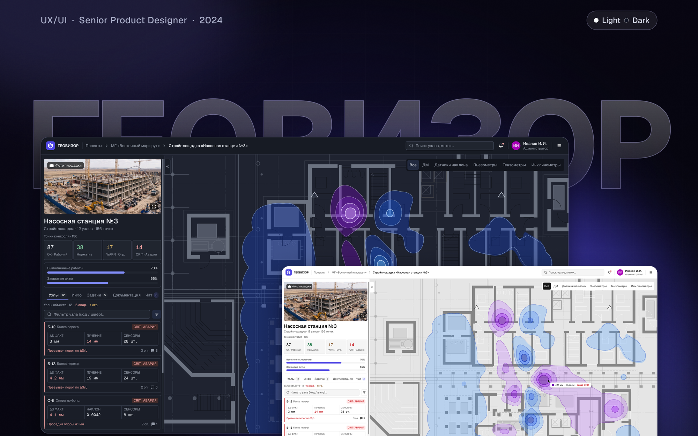
ГЕОВИЗОР — облачная платформа геотехнического мониторинга (ГТМ) для строек и линейных объектов. В одной базе — показания датчиков, инженерная аналитика, задачи, документы и акты, а каждая из шести ролей видит то, что положено ей.
Это моя собственная разработка: я спроектировал продукт с нуля и довёл его до рабочего прототипа. Внедрений и клиентов пока нет — ниже то, что сделано и что можно посмотреть руками.
Что уже готово
Рабочий прототип — React, 64 маршрута, вход по логину под каждой из 6 ролей, темы Light и Dark, ширины 1280 и 1920. Демо-доступ по запросу
Автотесты прототипа — 300+ наборов, около 1 340 проверок на Playwright: маршруты всеми ролями, поиск «мёртвых» кнопок, сверка цвета и геометрии с макетом
Макеты — 149 чистовых экранов, каждый в светлой и тёмной теме; до них — low-fi на 307 кадров и 142 уникальных экрана
Дизайн-система в Figma — 147 мастер-компонентов с 889 вариантами, 121 семантический цветовой токен, 2 темы режимами переменных, 14 текстовых стилей, 55 иконок
Демо-видео — сценарий «авария» в прототипе, от портфеля до задачи по точке, 1:39 (ролик ниже, в разделе «Основной сценарий»)
Документация — 6 опубликованных артефактов, каждый отдельной страницей:
- Исследование ролей — 6 ролей, нормативка ГТМ, гайд для интервью
- Конкурентный анализ — 15 продуктов по 7 вопросам, незанятые ниши
- CJM и user flow — 12 этапов, 52 точки касания, user flow каждой роли
- Информационная архитектура и сайтмап — модель данных, сайтмап, матрица прав
- Дизайн-система — токены, две темы, цвет по смыслу, путь решения до экрана
- Юзабилити-проверка прототипа — эвристики, 2 сценария, итерации «было → стало», план теста
Моя роль — всё от discovery до прототипа: исследование, ролевая модель и IA, продуктовые решения и скоуп, UX/UI, дизайн-система, рабочий прототип, юзабилити-проверка, план следующей итерации
Инструменты — Figma (переменные, режимы, компоненты), React, Playwright, shadcn UI Kit, Lucide
Задача и контекст
Вокруг котлованов, под фундаментами и вдоль трубопроводов ставят датчики и марки. По ним следят за осадкой и креном грунта и конструкций. Если значения подходят к проектному допуску, работы нужно вовремя остановить или усилить конструкцию.
Сегодня данные идут цепочкой «бумажный журнал → Excel → PDF-отчёт → звонок с площадки». Решение остановить работы принимают по телефону, а не по данным.
Проблема пользователя
Каждая роль собирает картину из своих кусков. Оператор переносит замер из журнала в Excel через день-два и не знает, принят ли он. Руководитель проекта получает отчёты подрядчиков раз в неделю в разных форматах. Финансовый отдел сверяет акты с объёмом работ вручную. Заказчик узнаёт о состоянии объекта из PDF через недели.
Проблема бизнеса
Решение о покупке принимает руководитель проекта или технический директор: он отвечает за риски и сроки, но не видит их вовремя. Каждый день продуктом пользуются Оператор и Аналитик. Если им неудобно, данные для всех остальных приходят неполными и с опозданием.
Задача
Спроектировать с нуля платформу, где шесть ролей работают в одной базе. Путь «увидел аварию → разобрался → отреагировал» должен занимать несколько шагов, а инженерные данные — быть связаны с задачами, документами и актами.
Аудитория — девелоперы, генподрядчики, изыскательские компании, эксплуатанты трубопроводов. Роли — Администратор, Руководитель проекта, Аналитик, Оператор, Финансово-экономический отдел (ФЭО), Заказчик.
Роли и исследование
Интервью с пользователями на старте не было. Поэтому основой стали кабинетное исследование, отраслевые нормативы (ГОСТ 24846-2019, СП 305.1325800.2017, СП 25.13330.2020) и разбор рабочих процессов каждой роли. Для проверки выводов я подготовил гайд для интервью по ролям.
| Роль | Главный вопрос к системе |
|---|---|
| Администратор | Кто имеет доступ и кто что менял? |
| Руководитель проекта | Где сейчас опасно и что с этим делают? |
| Аналитик | Что показывают тренды и укладываются ли значения в допуск? |
| Оператор | Какие у меня задачи и приняли ли мой замер? |
| ФЭО | Какой объём работ подтверждён данными и что оплачивать? |
| Заказчик | В норме объект или нет? |
Покупает руководитель, чаще всех пользуется Оператор, доверие к системе формирует Аналитик. Отсюда два вывода. Язык главных экранов — риски и сроки. А самый простой интерфейс нужен роли, которая меньше всех влияет на покупку, но от неё зависят данные для всех остальных.
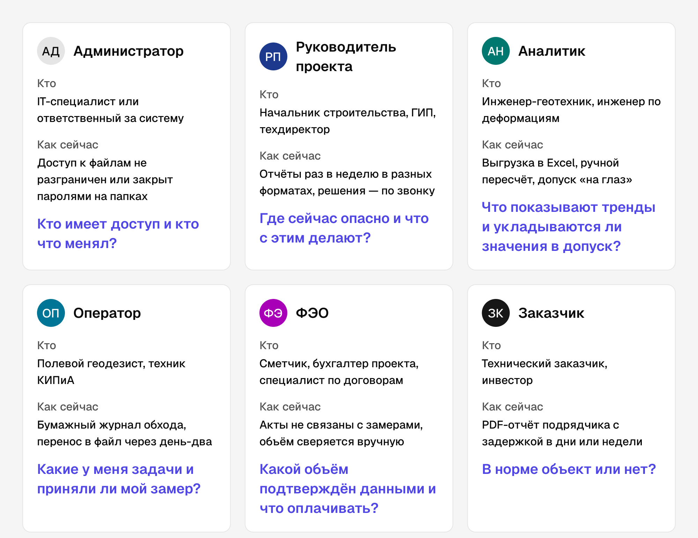
Конкуренты
Я разобрал 15 продуктов — 7 зарубежных и 8 российских — по семи вопросам: права участников, карта объекта, пороги, документы, финансы и доступ заказчика, ввод из поля, привязка к приборам.
Оповещение о превышении порога есть почти у всех. Но никто не ведёт человека дальше: кто разбирается, кто едет на замер, кто принял работу и что попадает в акт. Настраиваемой модели ролей и связи показаний с актами нет ни у одного из 15. Заказчик везде — адресат PDF.
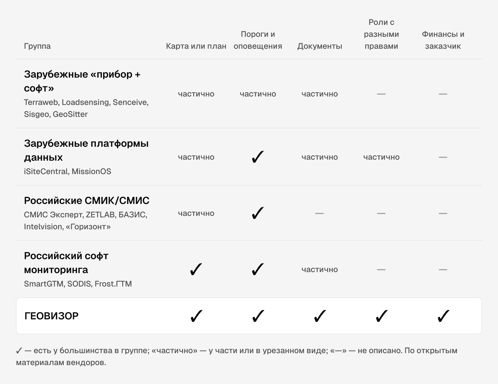
CJM
User flow показывает путь одной роли, а CJM складывает их в историю объекта — от подключения компании до отчёта заказчику. 12 этапов, 52 точки касания, 17 из них за пределами продукта: звонок, мессенджер, PDF, 1С. Именно в этих передачах между ролями теряется время.
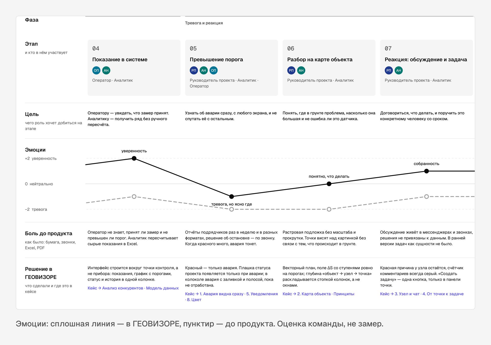
Гипотеза
Если аварию видно с любого экрана, а обсуждение и задачу по точке можно начать там, где видно показание, руководитель проекта будет реагировать на превышение по данным, а не по звонку. Время от превышения до действия сократится. А если акты связаны с теми же данными, ФЭО и Заказчику не придётся сверять их вручную.
Главная метрика после запуска — время от фиксации превышения до первого действия ответственного. В прототипе она не измерялась: это план.
Ключевые решения
1. Одна структура на шесть ролей
У конкурентов пользователь по сути один — инженер мониторинга. Я сделал одно дерево продукта, где ветки открываются правами, и матрицу прав, которую настраивает Администратор. Продукт не распадается на шесть интерфейсов, навигация одна. Глубина — не больше трёх уровней: главная → раздел → экран.
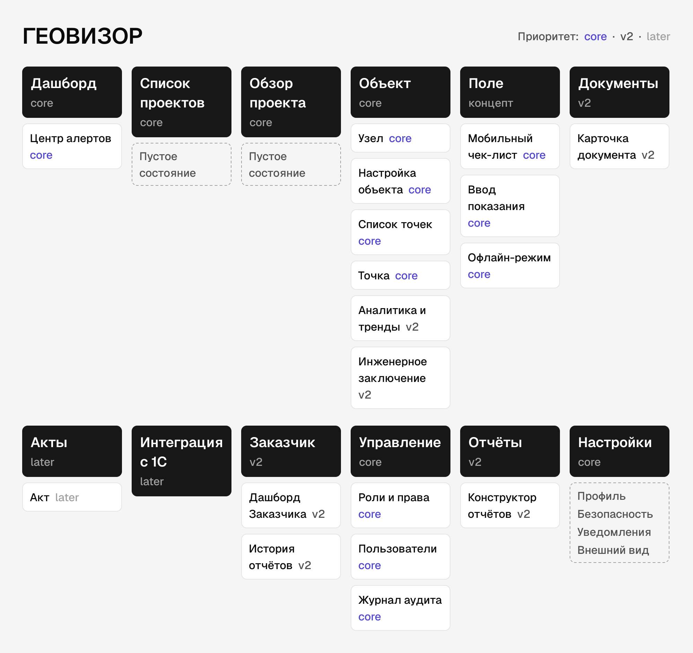
2. Четыре уровня, разведённые по нормативке
В low-fi одни и те же типы наблюдений висели и на объекте, и на узле. По ГОСТу репер — знак сети площадки, а деформационная марка закреплена на конструкции. Из этого разбора выросла иерархия «Проект → Объект → Узел → Точка контроля». Рынок привык к плоским спискам по типу прибора, поэтому фильтр по типу работает сквозь оба уровня.
3. Красный — только авария
Когда на экране много красного, настоящая авария теряется. Плашка статуса у проекта появляется только при аварии, отставание по графику — янтарём со значком, выбор и ссылки — индиго. У каждого цвета один смысл, и это проверяется замером контраста и различимости, а не на глаз.
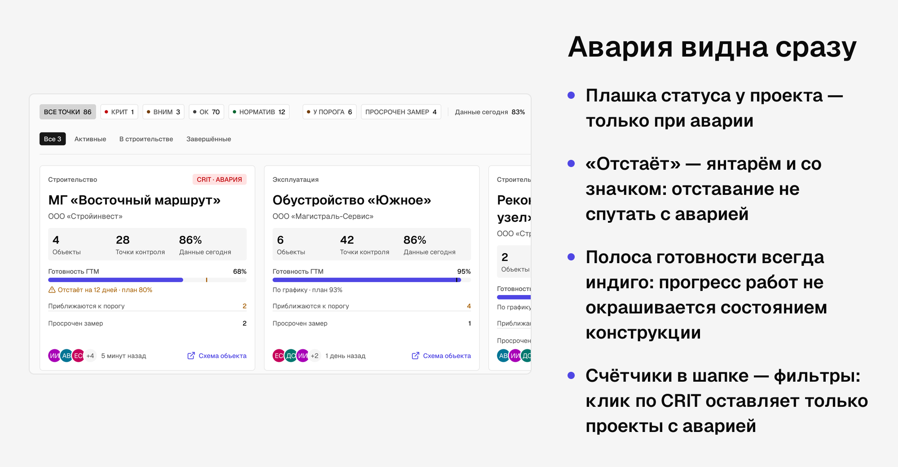
Поле деформаций на плане выбирали из семи шкал. Взяли ступенчатую: границы ступеней совпадают с порогами 1.6 и 2.0 мм. Цвета — синий и фиолетовый, потому что красный и жёлтый заняты статусами точек.
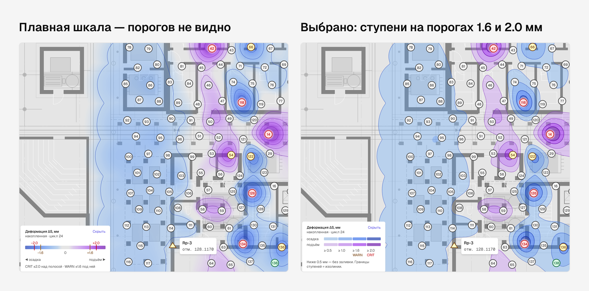
4. Реакция рядом с показанием
Оповещение — стандарт рынка, поэтому отличие я строил в следующем шаге. Чат узла стоит над вкладками узла. Задача ставится одной кнопкой из панели точки, и форма сама подставляет объект, узел, точку и последнее показание. У задачи жизненный цикл до приёмки, возврат — только с причиной.
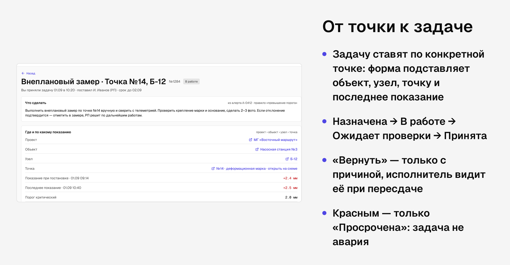
5. Документы и финансы в той же базе
Проект, объект и узел — привязки документа, а не папки. Бухгалтер видит акты, не заходя на карту. Согласование идёт по маршруту внутри системы: акт проходит Аналитика и Руководителя проекта, договор уходит в ФЭО.
Скоуп MVP
Вошло в чистовые экраны и прототип: портфель проектов с аварией на первом плане, объект на векторном плане с полем деформаций, узел и точка с показаниями, графиком и фото, чат узла, задачи с жизненным циклом, колокол уведомлений и реестр алертов, документы с маршрутом согласования, роли и права, журнал аудита.
Отложено: мобильный полевой ввод с офлайн-режимом (есть концепт в user flow Оператора), отдельный кабинет Заказчика, интеграция с 1С. Сначала нужно было проверить ядро — путь от аварии до задачи, на котором держится гипотеза.
Основной сценарий — авария
Оператор видит аварию в портфеле → открывает объект «Насосная станция №3» → узел Б-12 с причиной тревоги → точку №14 → показания, график, фото обходов → пишет коллеге в чате узла → ставит задачу по точке. Ролик записан в рабочем прототипе, тёмная тема, 1:39.
От low-fi к интерфейсу
Первым этапом был большой low-fi прототип: 307 десктоп-кадров, 142 уникальных экрана. На нём договорились о составе продукта и словаре. Потом я сверил его с требованиями и дорисовал три пропущенных экрана: сводный дашборд алертов, мобильный ввод показаний и журнал аудита. Дальше каждый раздел шёл одним путём: low-fi → доска вариантов → чистовые экраны в двух темах.
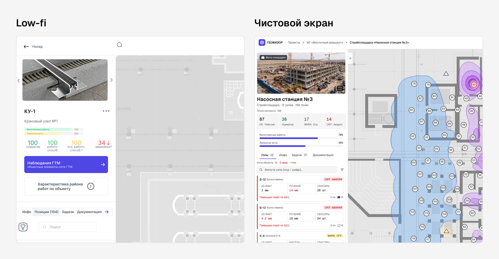
Дизайн-система
Система построена на shadcn UI Kit, над ним — собственный семантический слой: surface/panel, status/critical, action/primary, map/wall. Экраны ссылаются только на смысловые токены, поэтому тёмная тема включается сменой режима переменных, а не перекраской.
| 147 | 121 | 149 × 2 |
|---|---|---|
| мастер-компонентов, 889 вариантов в них | семантических цветовых токенов, режимы Light и Dark | чистовых экранов, каждый в светлой и тёмной теме |
Типографика — 14 стилей на Geist и Geist Mono, цифры показаний набраны моноширинным. Иконки — 55 контурных глифов Lucide. Три уровня подъёма: Raised, Floating, Accent.
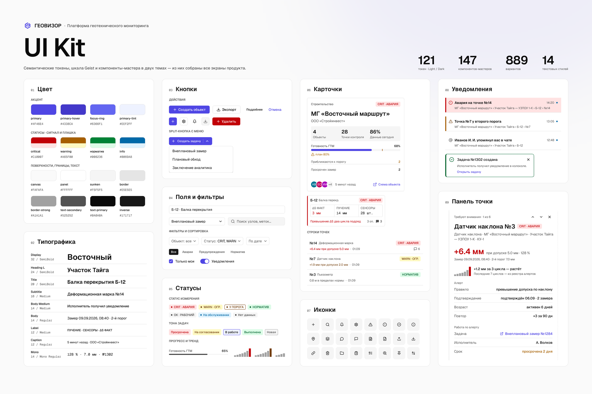
Главное правило — у каждого цвета один смысл, и занятый цвет не берут для другого. Для каждого нового цвета я считал контраст к фону и различимость ΔE к уже занятым цветам в обеих темах. Цвет, слишком близкий к занятому, в систему не попадает.
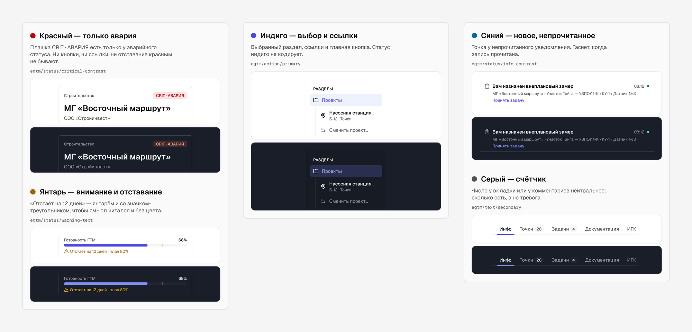
Процесс
Три страницы Figma — три стадии зрелости решения. Sandbox — доски вариантов: спорный вопрос разбирается как 3–7 вариантов в обеих темах, у каждого подписаны принцип, плюсы, минусы и замеры; всего 49 досок. Foundation — токены, мастер-компоненты, эталоны паттернов. Screens — только чистовые экраны из мастеров и токенов.
Путь одного решения: вопрос → доска вариантов на клонах реальных экранов → решение с причиной → изменение в мастере или токене → раскатка по всем местам в обеих темах → то же решение в рабочем прототипе.

Проверка
Внешних юзабилити-сессий на этом этапе не было, и я не выдаю проверку за них. Проверял прототип: экспертная оценка по 10 эвристикам Нильсена, сквозные прогоны двух ключевых сценариев с входом под разными ролями, автотесты. Результаты — число шагов и найденные дефекты, а не проценты прохождения.
| 11 шагов | 16 шагов | 300+ | 2 × 2 |
|---|---|---|---|
| от аварии в портфеле до задачи по точке | полный цикл задачи: принял → сдал → вернул → сдал → принял, две роли | наборов автотестов, около 1 340 проверок | темы Light и Dark × ширины 1280 и 1920 |
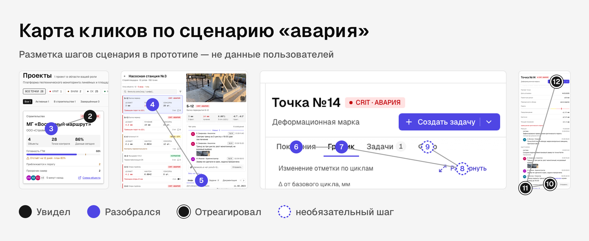
Две находки, которые сильнее всего поменяли интерфейс.
Обсуждение узла жило только во вкладке «Чат» — рядом с показаниями его не было видно. Теперь на карточках узлов серый счётчик комментариев, а блок «Чат узла» стоит над вкладками.
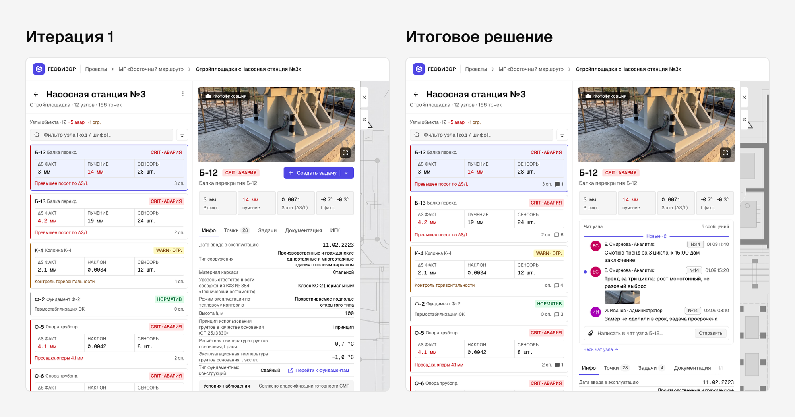
У каждой карточки в ленте узлов была своя цветная плашка — цвета спорили, авария не выделялась. Теперь карточка нейтральная, цвет только у аварии и значений за порогом.
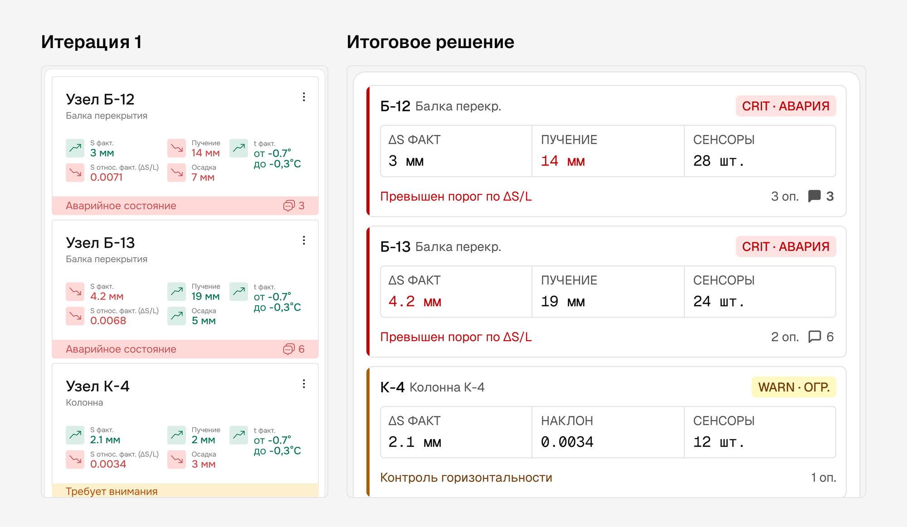
Ещё несколько: аудит 23 рядов фильтров свёл их к одному шаблону, раскатанному на 78 кадров; колокол перестал уводить с карты на отдельный экран; автотесты нашли кнопки без действия, и появилось правило «нет мёртвых элементов».
Главный вывод — механика сценариев работает: путь от аварии до задачи и цикл приёмки проходятся без тупиков. Проблемы были в заметности и шуме. Решение — меньше цвета и контекст рядом с данными.
Для следующего шага готов план теста с пользователями: по два участника на роль у руководителя проекта, аналитика, оператора и ФЭО, модерируемые сессии по 45–60 минут, задачи и критерий успеха для каждой роли.
Результат
- Найдена ось продукта: ролевая модель, финансы и заказчик как пользователь — ниша, которую не закрывает ни один из 15 разобранных конкурентов
- Модель данных из четырёх уровней, опирающаяся на нормативы, а не на удобство макета
- 149 чистовых экранов в двух темах из 147 компонентов и 121 токена
- Рабочий прототип на 64 маршрута, где сценарии «авария» и «жизнь задачи» проходятся разными ролями без тупиков
- Процесс, в котором каждое решение проходит путь от доски вариантов до мастер-компонента, и у каждого записана причина
Что я вынес
Нужны правила, а не образцы. Образец копируют вместе с ошибками, а правило с причиной переносится на новый экран.
Цвет проверяется числом. Контраст и ΔE в обеих темах снимают спор «мне кажется, заметно».
Рабочий прототип находит то, чего не видно в Figma: кнопки без действия, расходящиеся состояния, потерянную прокрутку.
Что дальше
Тест с реальными пользователями по готовому плану. Затем v2: мобильный обход для Оператора с офлайн-режимом, фильтр точек по статусам на карте, кабинет Заказчика, статус связи с сервером в шапке, электронная подпись на PDF и выгрузка актов в 1С.
Контакты
Алексей Павлов
Телефон: +7 953 355-57-42
Telegram: @LeshaGermann
Исследование ролейКонкурентный анализCJM и user flowИнформационная архитектура и сайтмапДизайн-системаЮзабилити-проверка прототипа